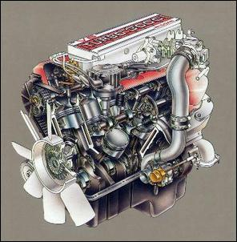

-
The subject says it all. My driver power seat will not move up. All the other functions work; up, down, and back. I got a hunch that the motor is water damaged. I don't think anything is stuck in the track. It doesn't even make a sound or nudge (as a foreign object was blocking it) when I try to move it up. I did not notice that I had a leak in the rear corner of the trim next to my door until I got in my car this morning, after a hard rain, and saw water running down my trim line. If this is the case and my motor is ruined, how would I remove the seat? I can see the two bolts up front but the other two are not accessible.
Please help!!! I have short legs :-(
1985 SCCA GT-1 Champion -
yeah that would be a real problem to get it out. Maybe look at the schematic and see if you can jump 12v to the motor somehow and get it to move. I seem to remember that you can take out a couple screws and get at the switch. Did it on an 86 but been over a year. did you look in the fsm maybe there is some emergency procedure you can use.83 n/a, 86T, 96TT -
I am not too confident in my electrician skills. I will search around google and find a pdf. fms and see what is in there.
1985 SCCA GT-1 Champion -
I've had to remove a seat before that wouldn't move forward. I just uncomfortably squeezed my hand and used a wrench a 1/8 turn at time. More then likely you have the straw like padding wrapped around the drive screw which I've seen a dozen times. If you remove the front ones and then get the rear closest to the door you should be able to move the seat enough to get the last easier. -
+1Blown-N-Boosted wrote: I've had to remove a seat before that wouldn't move forward. I just uncomfortably squeezed my hand and used a wrench a 1/8 turn at time. More then likely you have the straw like padding wrapped around the drive screw which I've seen a dozen times. If you remove the front ones and then get the rear closest to the door you should be able to move the seat enough to get the last easier.
I had to have my friend with small asian hands figure out a way to remove the motor from within the car and then he removed the seat.
I then took out all the coconut husk padding or whatever that shit is from the linear motor gear (long worm gear piece), and then put a plastic barrier (plastic floor mat) cut to size and slipped it between the motors and the padding so that it wouldn't happen again. -
I've been through this a few times. as stated you get the front two off, you can get to rear closest to the door out by squeezing in and turning it 1/8 turn at a time BUT… the nut on the rear inner one will come loose the same way but will not come off because it hit the seat rail befroe it even comes close to coming off. I had to pull the back loose, and mess up the cushion to get one out then replace it with another good seat. You can also get someone to lay in the hatch area with their feet against the back of the seat while you hit the seat switch. This worked once for me.
When ever you pull your seat out, Aways clean out the worm drive gears and motor assembly before putting them back in. It's probably clogged with debris as already stated and froze up.
1988 300ZX Turbo, Shiro Special #760
1988 300ZX Turbo Automatic (wife's car)
1991 Hard-body 2WD
http://zccw.org/zccw/?page_id=1215 -
The motor is mounted up in the seat bootom about 4" from the floor so unless the water was that deep I wouldn't think that to be the problem. The power seat is detailed in section BF of the FSM.I did not notice that I had a leak in the rear corner of the trim next to my door until I got in my car this morning, after a hard rain, and saw water running down my trim line. If this is the case and my motor is ruined
But, here's waht I learned when I recently removed and dissembled the seat for new leather. You can remove the door side switch panel with a few screws to get at the switches. It is most likely the switch or the switch ground wire causing the problem. When I put the seat back together and reinstalled it would not go forward/back. Took the seat out again and found I didn't have the ground from that switch properly connected. So I would lossen switch and tug on ground a little while using switch. If wire comes loose ground anywhere on seat frame. If that doesn't work I believe the switches are the same try hooking to one that works. May be a bad switch. Good luck

Copyright © 2006–. All rights reserved. Privacy Policy